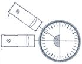

| Objetivo: |
Estudiar el comportamiento de un haz estrecho al pasar la luz de cristal a aire, y medir el ángulo de refracción en función del ángulo de incidencia. |
| Material |
|
|
| Introducción: |
|
Ver introducción practica 43. |
| Desarrollo Experimental: |
|
Atención: Cuida en todos los pasos del experimento, que el haz de luz estrecho de la caja luminosa (figura 1) vaya siempre exactamente al centro del disco óptico (“pie de la normal”), y que la cubeta no varíe su posición al mover la caja. Montaje Ver figura 1
Realización:
|
| Resultados y Conclusiones: |
1) Comportamiento del haz de luz estrecho al atravesar oblicuamente la superficie de separación vidrio/aire (α =10). 2) Comparación entre el ángulo de incidencia y el ángulo de refracción. 3) Comportamiento del haz de
luz estrecho al atravesar oblicuamente la superficie de separación
vidrio/aire (α = 40°). Describe, de acuerdo con lo que has observado: 1) Cómo se comporta el haz de luz estrecho al atravesar oblicuamente una superficie de separación vidrio/aire. 2) Compara entre sí los ángulos de incidencia α y los correspondientes de refracción β de la tabla 1. Di el resultado. 3) Compara las observaciones del haz de luz estrecho con α = 10º y α = 40°. ¿Qué diferencia puedes comprobar?. 4) Trata de explicar cómo se comportaría un haz de luz estrecho enviado por una fuente de luz bajo agua (ej.: la caja luminosa de un buceador) al atravesar la superficie de separación agua/aire. |
|
Figura
1:1 –Ajuste, 2 – Primera medición
|
|  |